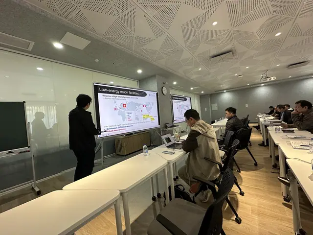
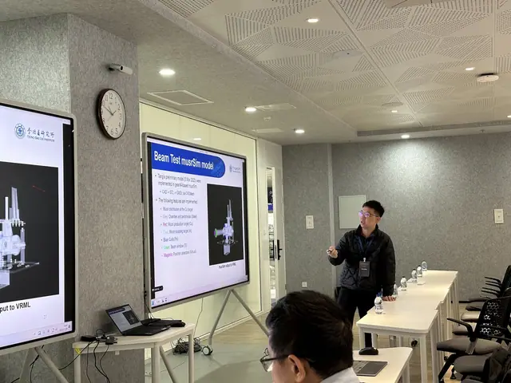
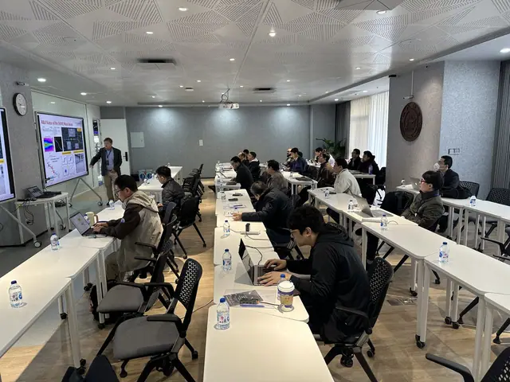
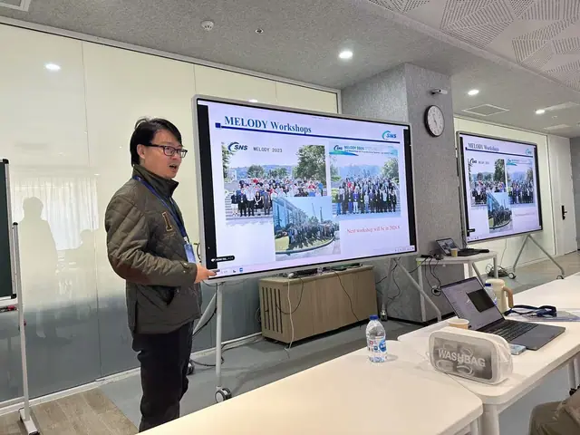
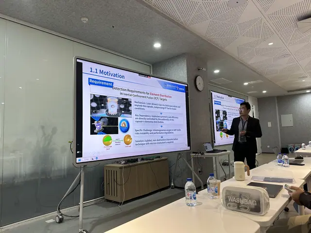

On November 28, 2025, the First Workshop on SHINE Muon Source and Its Applications (SMS 2025) was successfully held at the Tsung-Dao Lee Institute (TDLI), Shanghai Jiao Tong University. The event was co-hosted by TDLI, the Shanghai Advanced Research Institute (SARI) of the Chinese Academy of Sciences (CAS), and ShanghaiTech University.
The workshop brought together over thirty experts and scholars from domestic universities and research institutes, including Fudan University, ShanghaiTech University, the Institute of Modern Physics (IMP-CAS), the Institute of High Energy Physics (IHEP-CAS), and SARI-CAS. Kim Siang served as the convener and delivered the opening remarks. Yusuke and Jun Kai from our group presented an overview of the SHINE Muon Source project and the preparations for the 2026 beam test at SHINE, respectively.




During the thematic sessions, the experts held in-depth discussions on a range of frontier topics. The agenda covered the latest progress of the SHINE facility, R&D on the SHINE muon source and related physics, muon spin spectroscopy and its applications, muon imaging technology, and dark matter searches with muon beams. Besides sharing their latest results and research trends, the attendees outlined a development roadmap for domestic muon sources—from planning and construction to practical application—and unanimously recognized the great potential of this field.
The workshop promoted academic exchange and resource sharing on the SHINE muon source and its applications, laying a foundation for future scientific collaboration and key technical breakthroughs. It also provided valuable experience for continuing this workshop series. Building on this event, we look forward to more substantive collaborations that jointly advance China’s muon physics and advanced light source technologies.
More information about the workshop can be found at https://indico-tdli.sjtu.edu.cn/event/4498/.





